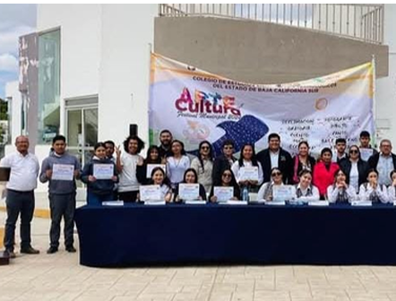

10 DE MARZO DEL 2025
CULTURAL
CRÓNICA
LA VOZ DEL SOL, MAR Y DESIERTO
Estuve el pasado 15 de marzo del 2024 en el concurso de Arte y Cultura celebrado en el pueblo de Vizcaíno, donde se reunieron alumnos de todos los planteles del Municipio. El ambiente estaba un tanto caluroso, pues las sombras no beneficiaban el lugar, a pesar de ser la Casa de la cultura muy grande y amplia, no contaba lugares afueras que protegieran de los rayos del sol.
Poco a poco ingresaban carros con alumnado, reflejando la intriga en sus rostros, al igual que, en nerviosismo que empezaba a florar en ellos.
Para dar inicio a dicho evento Imer Osuna Cárdenas representante del director general de CECyTE, dio palabras de motivación a los jóvenes, mostrándose seguro de sí mismo al hablar; para continuar rindiendo honor a la patria, mientras entablábamos los honores a la bandera.
El tiempo de espera fue largo, lo que permitió a los jóvenes romper el ‘hielo’ y empezar a relacionarse. Aproximadamente una hora y media después de la inauguración del evento, se vio el arribo de los jueces de cada área del evento, siendo dos jueces encargados de un área.
Mientras esperaba mi turno, me di una vuelta por el lugar apreciando las obras de mis compañeros. En una esquina del frio salón de la Casa de la cultura, se encontraba las pinturas y dibujos, todos reflejos de los sentimientos de las y los alumnos que participaban, una de las que más destacaban era un dibujo a lápiz de un hombre viendo por encima de su brazo, dando una mirada llena de enojo. Podía ver el nerviosismo emanar de una de mis compañeras y la expectantica de los que estábamos a nuestro alrededor.
La espera parecía eterna mientras observaba a los jueces hablar entre sí, mostrando una cara de póker que no dejaba a la imaginación de las personas. Fueron momentos de intriga y tención entre los jóvenes.
La espera parecía eterna mientras observaba a los jueces hablar entre sí, mostrando una cara de pókerque no dejaba a la imaginación de las personas. Fueron momentos de intriga y tención entre los jóvenes.
